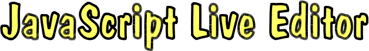

// *************************************************************** // ******* Welcome to the Wonderful World of JavaScript! ******* // *************************************************************** // // This is a JavaScript editor where you can evaluate code directly // in the browser, and instantly see the result. Select the code // you want to run and click the Evaluate button. // // Tested in Firefox 3.5 // Select and evaluate, the result is shown below. 1 + 2 // Select both lines and evaluate, result of last line is shown. // (You cannot evaluate this one line at a time.) function twice(n) { return n * 2; }; twice(22); // Each evaluation takes place in its own scope; the scope is // lost when the evaluation returns. To make variables persistent // they must be defined in the global scope. The following can be // evaluated one line at a time. twice = function(n) { return n * 2; }; twice(22); // This page includes the Google Closure base library. Here is // something to try. Then look at the bottom of the document. hello = goog.dom.createDom( "h1", { "style": "background-color:#FFEE00" }, "Hello World!"); goog.dom.appendChild(document.body, hello); // Remove the text. goog.dom.removeNode(hello); // This page includes Closure modules goog.dom and goog.events. // To be able to load additional modules interactively in the // browser we must first tweak Closure a bit. Evaluate this code. goog.mikiWriteScriptTag = function(scriptPath) { var scriptTag = document.createElement("script"); scriptTag.setAttribute("type","text/javascript"); scriptTag.setAttribute("src", scriptPath); document.getElementsByTagName("head")[0].appendChild(scriptTag); }; goog.writeScriptTag_ = function(src) { if (goog.inHtmlDocument_() && !goog.dependencies_.written[src]) { goog.dependencies_.written[src] = true; // New code: goog.mikiWriteScriptTag(src); // Original code: // var doc = goog.global.document; // doc.write('<script type="text/javascript" src="' + // src + '"></' + 'script>'); } }; // Now we can include the module we want. This line must be // evaluated individually for the module to have time to load! goog.require("goog.graphics"); // Create a canvas to draw on. mikiCanvas = new goog.graphics.CanvasGraphics(300, 300); // Make the canvas appear (at the bottom of the page). mikiCanvas.render(); // Draw a filled rectangle. mikiCanvas.drawRect( 10, 10, 280, 280, new goog.graphics.Stroke(2, "red"), new goog.graphics.SolidFill("yellow")); // Set the cursor for the canvas. mikiCanvas.getElement().style.cursor = "pointer"; // Move the canvas to an absolute position. mikiCanvas.getElement().style.position = "absolute"; mikiCanvas.getElement().style.left = "500px"; mikiCanvas.getElement().style.top = "100px"; // Add an event listener. goog.events.listen( mikiCanvas.getElement(), goog.events.EventType.MOUSEDOWN, function(event) { alert( "You clicked at: " + event.offsetX + ", " + event.offsetY) ; }); // Remove event listener. goog.events.removeAll(mikiCanvas.getElement()); // Define some stuff to make a sketch editor. mikiMouseDown = false; mikiDrawBrush = function(canvas, x, y) { canvas.drawEllipse( x - 10, y - 10, 20, 20, new goog.graphics.Stroke(1, "black"), new goog.graphics.SolidFill("white")); }; // Define the events for the editor. goog.events.listen( mikiCanvas.getElement(), goog.events.EventType.MOUSEDOWN, function(event) { mikiMouseDown = true; mikiDrawBrush(mikiCanvas, event.offsetX, event.offsetY); }); goog.events.listen( mikiCanvas.getElement(), goog.events.EventType.MOUSEMOVE, function(event) { if (mikiMouseDown) { mikiDrawBrush(mikiCanvas, event.offsetX, event.offsetY); } }); goog.events.listen( mikiCanvas.getElement(), goog.events.EventType.MOUSEUP, function(event) { mikiMouseDown = false; }); // Remove the canvas from the document. goog.dom.removeNode(mikiCanvas.getElement()); // That's all for now! ;-)
Result area.
Copyright (c) 2010 Mikael Kindborg | Source code license: MIT | Contact:
twitter.com/divineprog